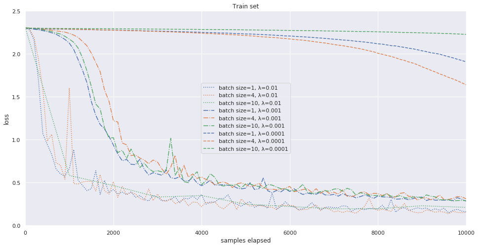
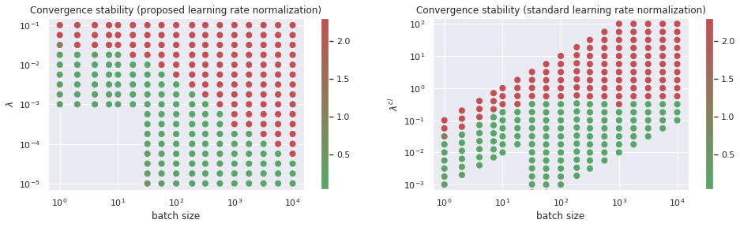
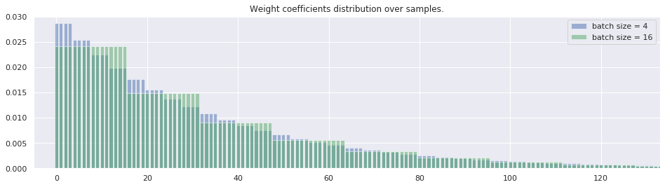
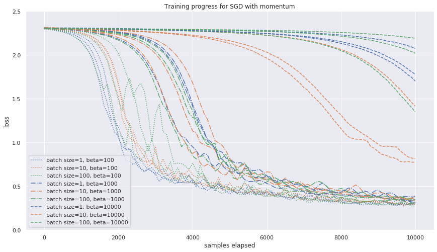

Batch size vs Momentum
Imagine we’ve pinpointed the optimal learning rate and other hyperparameters for a gradient descent method and a specific model. But how do we adjust the gradient descent hyperparameters to scale up the batch size effectively without disrupting the current settings? Our main thesis: changing the batch size is roughly equivalent to adjusting the learning rate and momentum.
Imagine we’ve pinpointed the optimal learning rate and other hyperparameters for a gradient descent method and a specific model. The natural progression is to train this model on more powerful hardware, equipped with additional GPU units and RAM, enabling larger batch sizes. But how do we adjust the gradient descent hyperparameters to scale up effectively without disrupting the current settings?
In this article, we explore this question along with some related ones. Our main thesis: changing the batch size is roughly equivalent to adjusting the learning rate and momentum.
1 Notation
Let \(\boldsymbol\theta \in \mathbb{R}^D\) be a trainable weight vector in the \(D\)-dimensional space of the model’s trainable weights. We denote the sequence of weight updates during the training process by \(\{\boldsymbol\theta_n\}_{n = 0,1,2,3,\ldots}\).
Let \(L(x, y; \boldsymbol\theta)\) be the loss function for a supervised model with weight \(\boldsymbol\theta\), and a single data sample with feature \(x\) and label \(y\). Define the loss gradient at point \(\boldsymbol\theta\) for sample \((x_i,y_i)\) with ordering number \(i=0,1,2,\ldots\) as \[ \mathbf{g}_i(\boldsymbol\theta) := \frac{\partial}{\partial \boldsymbol\theta} L(x_i, y_i; \boldsymbol\theta). \]
The samples \(\{(x_i,y_i)\}_{i=0,1,2,\ldots}\) are combined into batches. We consider the case of a fixed batch size \(b=1,2,3,\ldots\). We define an integer-valued function \[ t:\quad \{0,1,2,\ldots\} \quad \rightarrow \quad \{0,1,2,\ldots\} \] that maps the ordering number of each sample to the ordering number of the batch it belongs to. For example, for \(b=3\), we have \[ t_0 = 0,~t_1 = 0,~t_2 = 0,~t_3 = 1,~t_4 = 1,~t_5 = 1,~t_6 = 2,~t_7 = 2,~t_8 = 2,~\dotso. \]
2 Learning Rate Normalization
We begin with the simplest version of stochastic gradient descent without momentum, parameterized by the learning rate \(\lambda^{\text{cl}} > 0\). The weight update rule is \[ \boldsymbol\theta_{n-1}~ \rightarrow~ \boldsymbol\theta_n := \boldsymbol\theta_{n-1} - \lambda^{\text{cl}} \, b^{-1} \sum_{i:~ t(i) = n} \mathbf{g}_i(\boldsymbol\theta_n), \label{eq:sgd-classic} \] where \(\sum_{i:~ t(i) = n}~\dotso\) is a sum over the minibatch \(n\). The upper index “\(~^{\text{cl}}\)” denotes the “classically normalized” hyperparameter normalization that we are going to reconsider.
Suppose the batch size \(b\) has changed. Our goal is to scale up \(\lambda^{\text{cl}}\) such that the shift of the weight sequence \(\{\boldsymbol\theta_n\}_{n = 0,1,2,3,\ldots}\) is minimized. More precisely, after the batch size change \(b \rightarrow \tilde b\), each of the weights \(\tilde{\boldsymbol\theta}_{\tilde t(i)}\) from the new sequence should be close to the original ones \(\boldsymbol\theta_{t(i)}\) for each \(i=0,1,2,\ldots\), where \(\tilde t\) corresponds to the new batch size \(\tilde b\). It is straightforward to observe that a reasonable learning rate update is \[ \lambda^{\text{cl}} \rightarrow \tilde \lambda^{\text{cl}} = \frac{b}{\tilde b}\, \lambda^{\text{cl}}. \] In other words, the coefficient \(b^{-1}\) in \(\eqref{eq:sgd-classic}\) is not needed to maintain this behavior.
For example, if we increase the batch size by a factor \(k\), the total contribution from \(k\) sequential steps is replaced by a single step with \(k\) times the number of samples. The only difference between these sums is that in the latter case, all gradients are calculated at the same weight, whereas, for a smaller batch, there are \(k\) different but close weights corresponding to different sequential steps.
The mathematical motivation comes from the Taylor series approximation for small \(\lambda^{\text{cl}}\): \[ \mathbf{g}_i(\boldsymbol\theta_n) - \mathbf{g}_i(\boldsymbol\theta_{n-1}) = O\left(\left(\lambda^{\text{cl}} \right)^2\right), \] because \[ \boldsymbol\theta_n - \boldsymbol\theta_{n-1} = O(\lambda^{\text{cl}}). \]
To experimentally confirm this analytical reasoning, we consider the MNIST problem and a simple convolutional neural network. We avoid advanced techniques such as batch normalization to eliminate unnecessary additional effects.
model = tf.keras.Sequential([
tf.keras.layers.Reshape(input_shape=(28, 28, 1), target_shape=(28, 28, 1)),
tf.keras.layers.Conv2D(kernel_size=3, filters=12, padding='same', activation='relu'),
tf.keras.layers.Conv2D(kernel_size=6, filters=24, padding='same', strides=2, activation='relu'),
tf.keras.layers.Conv2D(kernel_size=6, filters=32, padding='same', strides=2, activation='relu'),
tf.keras.layers.Flatten(),
tf.keras.layers.Dense(units=256, activation='relu'),
tf.keras.layers.Dropout(0.3),
tf.keras.layers.Dense(units=10, activation=None)
])The loss function is the standard classification cross-entropy.
It is practically complicated to compare the weight update sequences directly. Instead, we consider the entire training progress and the mean loss convergence rate. The considered model does not suffer from significant overfitting. Thus, for simplicity, we present only the training dataset mean values below.
We experimentally verify that the convergence rate does not depend on the batch size, provided \(\lambda\) is fixed. See the figure below Figure 1.

The speculations above motivate us to normalize the learning rate \(\lambda\) as follows: \[ \boldsymbol\theta_n = \boldsymbol\theta_{n-1} - \lambda \sum_{i:~ t(i) = n} \mathbf{g}_i(\boldsymbol\theta_n), \] thereby, \[ \lambda^{\text{cl}} = b \, \lambda. \label{eq:lambda-cl} \]
If the batch size \(b\) equals the entire dataset size \(N\) or is of the same order of magnitude \(b \lesssim N\), the update on each learning step moves the weight closer to the minimum. However, this is not the case in the mini-batch strategy when \(b \ll N\), because each mini-batch represents very poor statistics of the entire dataset. Mini-batch learning works due to the statistics averaging effect after numerous learning step updates, thanks to an aggregation of data collected from a large number of mini-batches. This motivates the following: In mini-batch learning, it is probably more reasonable to control the total number of samples used for the updates than the actual number of updates.
We must mention that the similarity of the training weight update sequences at early and intermediate training stages does not imply that the quality of the achieved minima is similar. However, our approach also agrees with the empirical observations of Samuel L. Smith and Quoc V. Le. It is reported there that “…optimum batch size is proportional to the learning rate.” In other words, there exists a batch size-independent \(\lambda\) that minimizes the final test set loss.
As mentioned in the cited paper, a large batch size contributes to a better training set minimum. On the other hand, a small batch size provides additional gradient fluctuation, improving generalization ability. The optimal value of \(\lambda\) corresponds to a reasonable trade-off between these two effects.
Notice, however, that the speculations of this section are valid only if the convergence is stable. It becomes unstable if the learning rate or batch size is too high. We study this phenomenon briefly in the next section.
3 Convergence Stability
In this section, we experimentally investigate the stability of the neural network training process. It is widely known that gradient descent usually becomes unstable when the learning rate exceeds a certain value. This is straightforward for a classical optimization problem, where the batch equals the entire dataset. However, instability is more complex for mini-batch training.
The results for the MNIST problem introduced above are presented in Figure 2.

Our interpretation is as follows. There are two factors restricting stability. The first one comes from classical optimization theory. It is defined by the Hessian of the mean loss function \(b^{-1} \sum_{i}{L(x_i,y_i)}\) at the minimum. This is why we have the restriction \(\lambda^{\text{cl}} \lesssim 10^{-0.5}\).
The second restriction \(\lambda \lesssim 10^{-1.5}\) is less trivial. It occurs when the training process is in the mini-batch mode. This means that the batches are not statistically representative, and the training progress is made through the accumulation of numerous steps. Therefore, the stability of the training is defined by \(\lambda\), which is a coefficient near the full sum of the gradients.
We do not go into more details of the stability question here. However, we must mention that the statements from the previous section are valid only if the training process is in the green zone of Figure 2.
4 Gradient Descent with Momentum
Next, we study the effects of equipping gradient descent with momentum. The most widely used parameterization for this approach is as follows: \[ \begin{aligned} \mathbf{v}^{\text{cl}}_n &= m^{\text{cl}}\, \mathbf{v}^{\text{cl}}_{n-1} - \lambda^{\text{cl}}\, b^{-1} \sum_{i:~ t(i) = n} \mathbf{g}_i(\boldsymbol\theta_n) \\ \mathbf{\boldsymbol\theta}_n &= \boldsymbol\theta_{n-1} + \mathbf{v}^{\text{cl}}_n \end{aligned},\quad 0 \leq m^{\text{cl}} <1, \quad \lambda^{\text{cl}} > 0 \label{eq:sgd-mom-classic} \]
There is a widely mentioned physical interpretation for the parameter \(\mathbf{v}^{\text{cl}}\). If we consider \(n\) as a discrete “time”, then \(\mathbf{v}^{\text{cl}}\) can be understood as “velocity” in the space of weights. In this way, the batch-averaged gradient plays the role of “acceleration”. However, we focus on a different aspect of the momentum trick here.
The exponential moving average for the sequence \(\{g_n\}_{n=0,1,2,\dotso}\) is a sequence \(\{\mu_n\}_{n=0,1,2,\dotso}\) defined by the recurrent relation: \[ \mu_n = m\, \mu_{n-1} + (1 - m)\, g_n, \quad 0 \leq m < 1 \] with some initial condition for \(\mu_0\) that we are not interested in. Integrating it, we have: \[ \mu_n = (1 - m)\sum_{k=0,1,2,\dotso} \, m^k\, g_{n-k}. \] Thus, the momentum trick is simply the smoothing of gradients calculated on previous steps. Equivalently, instead of taking into account only the gradients calculated at the current weight \(\boldsymbol\theta_n\) at step \(n\), we sum up gradients obtained at all previous weights \(\boldsymbol\theta_{n-1}\), \(\boldsymbol\theta_{n-2}\), \(\boldsymbol\theta_{n-3}\), and so on, with decreasing weight coefficients \((1-m)m\), \((1-m)m^2\), \((1-m)m^3\), and so on, respectively. Notice that the sum of the weights is normalized as follows: \[ (1-m)\sum_{k=0,1,2,\dotso} \, m^k = 1, \quad 0 \leq m < 1. \] The parameter \(m\) is responsible for the rate of the weight decrease. We want to make this rate fixed in terms of sample counting, not update steps as usual. Specifically, the weight coefficient with which each single sample gradient \(g_i\) contributes should be minimally modified when transforming from one batch size to another. This implies: \[ \sqrt[b]{m} = \sqrt[\tilde b]{\tilde m}. \label{eq:m-root} \] In other words, after the batch size change, the momentum must be rescaled as: \[ m \rightarrow \tilde m = m^{\frac{\tilde b}{b}} \label{eq:m-rescale} \] to maintain consistent gradient smoothing over samples. Figure 3 likely illustrates this idea better than words and formulas.

The ultimate goal of our gradient descent hyperparameter reparameterization is to separate the technical part related to data parallelism from the real smoothing between gradients during the minima search. This motivates an alternative parameterization for \(\eqref{eq:sgd-mom-classic}\) as follows: \[ \begin{aligned} \mathbf{v}_n &= e^{-\frac{b}{\beta}}\, \mathbf{v}_{n-1} + (1 - e^{-\frac{b}{\beta}})\, \sum_{i:\, t(i) = n} \mathbf{g}_i(\boldsymbol\theta_n) \\ \boldsymbol\theta_n &= \boldsymbol\theta_{n-1} - \lambda\, \mathbf{v}_n \end{aligned},\quad \beta \geq 0, \quad \lambda > 0. \label{eq:sgd-mom-new} \] The case \(\beta = 0\) corresponds to \(m=0\). The larger the value of \(\beta\), the stronger the smoothing.
The advantage of the proposed approach is that we do not have to change the fine-tuned hyperparameters \(\lambda\) and \(\beta\) when moving to different hardware. It is enough to set the batch size \(b\) as large as possible (or until we face convergence stability restrictions from Section 3). The experimental confirmation is presented in Figure 4.

Notice, however, that for \(b \gtrsim \beta\), the momentum smoothing is weak with respect to “batch” smoothing, and the approximation illustrated in Figure 3 is no longer valid.
The relations between the proposed and classic hyperparameter normalization are: \[ \begin{aligned} m^{\text{cl}} &= e^{-\frac{b}{\beta}} \\ \lambda^{\text{cl}} &= \left(1 - e^{-\frac{b}{\beta}} \right) \lambda\, b^{-1} \end{aligned} \]
5 Adam Gradient Descent Case
For other gradient descent methods, our approach is similar. For example, Adam gradient descent in its classic parameterization in our notation is: \[ \begin{aligned} \mathbf{v}^{\text{cl}}_n &= \beta_1^{\text{cl}}\, \mathbf{v}^{\text{cl}}_{n-1} + (1 - \beta_1^{\text{cl}})\, b^{-1} \sum_{i:~ t(i) = n} \mathbf{g}_i(\boldsymbol\theta_n), \\ \mathbf{w}^{\text{cl}}_n &= \beta_2^{\text{cl}}\, \mathbf{w}^{\text{cl}}_{n-1} + (1 - \beta_2^{\text{cl}})\, \left[ b^{-1} \sum_{i:~ t(i) = n} \mathbf{g}_i(\boldsymbol\theta_n) \right]^2, \\ \boldsymbol\theta_n &= \boldsymbol\theta_{n-1} - \alpha^{\text{cl}} \frac {\mathbf{m}^{\text{cl}}_n} {\sqrt{\mathbf{v}^{\text{cl}}_n} + \varepsilon^{\text{cl}}}, \\ &0 \leq \beta_1^{\text{cl}} <1, \quad 0 \leq \beta_2^{\text{cl}} <1, \quad \alpha^{\text{cl}} > 0, \quad \varepsilon^{\text{cl}} > 0, \end{aligned} \label{eq:adam-classic} \] where the square and square root operations of a vector are elementwise. We propose the normalization: \[ \begin{aligned} \mathbf{v}_n &= e^{-\frac{b}{\beta_1}}\, \mathbf{v}_{n-1} + (1 - e^{-\frac{b}{\beta_1}})\, \sum_{i:~ t(i) = n} \mathbf{g}_i(w_n), \\ \mathbf{w}_n &= e^{-\frac{b}{\beta_2}}\, \mathbf{w}_{n-1} + (1 - e^{-\frac{b}{\beta_2}})\, \sum_{i:~ t(i) = n} \mathbf{g}_i(w_n)^2, \\ \boldsymbol\theta_n &= \boldsymbol\theta_{n-1} - \alpha \frac {\mathbf{v}_n} {\sqrt{\mathbf{w}_n} + b\, \varepsilon}, \\ & 0 \leq \beta_1, \quad 0 \leq \beta_2, \quad \alpha > 0, \quad \varepsilon > 0, \end{aligned} \] where we deviate slightly from the original Adam algorithm and replace the square of the gradient sum with the sum of gradient squares across the batch. It can be empirically checked that the typical values of \((\sum g)^2\) and \(\sum g^2\) are of the same order of magnitude. At least for the considered MNIST model, typical values of \(\sum g^2\) are approximately two times smaller than \((\sum g)^2\).
Ignoring the last remark, the relations between the proposed and the classic normalizations are: \[ \begin{aligned} \beta_1^{\text{cl}} &= e^{-\frac{b}{\beta_1}}, \\ \beta_2^{\text{cl}} &= e^{-\frac{b}{\beta_2}}, \\ \alpha^{\text{cl}} &= \alpha, \\ \varepsilon^{\text{cl}} &= b\,\varepsilon. \end{aligned} \label{eq:adam-relation} \]
6 Gradient Accumulation Technique
The relationship between momentum and batch size discussed above is quite straightforward. However, there is a widely used technique called gradient accumulation. According to this approach, we sum up gradients from several batches obtained for the same weight value. This way, the actual batch size can be increased infinitely, and GRAM is no longer a restriction.
As we saw in Section 3, for zero momentum, a higher batch size with a fixed \(\lambda\) can only disrupt the training process. For momentum training where \(\beta \gtrsim b\), the batch size change is indistinguishable from a \(\beta\) shift as observed in Section 4. Of course, the gradient accumulation trick can provide better results in practice, but it seems redundant.
7 Conclusion
We suggest a strategy to fine-tune the gradient descent hyperparameters as follows. Use first the hyperparameter normalization as described above, for example, in \(\eqref{eq:adam-relation}\). As a result of this, we can control the convergence rate while changing the batch size. However, it may happen that following the increase of the batch size, the convergence stability may be lost. In this case, we can either reduce \(\lambda\) to restore convergence or refrain from changing the batch size. The second option has the advantage of faster convergence with respect to the total calculation cost.
Remark that we did not consider the batch normalization technique here. This requires additional study because, for different batch sizes, we have different gradient fluctuation intensities that impact the final minimum generalization ability. See, for example, Mattias Teye, Hossein Azizpour, Kevin Smith.